虽然 Transformer 架构已成为自然语言处理任务的事实标准，但其在计算机视觉中的应用仍然有限。在视觉中，注意力要么与卷积网络结合使用，要么用于替换卷积网络的某些组件，同时保持其整体结构不变。我们表明，这种对 CNN 的依赖并非必要，直接应用于图像块序列的纯 Transformer 可以在图像分类任务上表现良好。当在大量数据上预训练并迁移到多个中型或小型图像识别基准（ImageNet、CIFAR-100、VTAB 等）时，Vision Transformer（ViT）相比最先进的卷积网络取得了优异结果，同时训练所需计算资源显著更少。
基于自注意力的架构，特别是 Transformer（Vaswani et al., 2017），已成为自然语言处理（NLP）中的首选模型。主流方法是在大规模文本语料上预训练，然后在较小的任务特定数据集上微调（Devlin et al., 2019）。由于 Transformer 的计算效率和可扩展性，已经可以训练规模空前的模型，参数超过 100B（Brown et al., 2020; Lepikhin et al., 2020）。随着模型和数据集的增长，性能仍未显现饱和迹象。
然而在计算机视觉中，卷积架构仍然占据主导地位（LeCun et al., 1989; Krizhevsky et al., 2012; He et al., 2016）。受 NLP 成功启发，多项工作尝试将类 CNN 架构与自注意力结合（Wang et al., 2018; Carion et al., 2020），有些则完全替代卷积（Ramachandran et al., 2019; Wang et al., 2020a）。后者虽然在理论上高效，但由于使用专门的注意力模式，尚未在现代硬件加速器上有效扩展。因此，在大规模图像识别中，经典 ResNet 类架构仍然是最先进的（Mahajan et al., 2018; Xie et al., 2020; Kolesnikov et al., 2020）。
受 Transformer 在 NLP 中扩展成功的启发，我们实验将标准 Transformer 直接应用于图像，并尽可能少做修改。为此，我们将图像切分为块，并将这些块的线性嵌入序列作为 Transformer 输入。图像块的处理方式与 NLP 应用中的词元（词）相同。我们以监督方式在图像分类任务上训练模型。
当在 ImageNet 等中型数据集上训练且没有强正则化时，这些模型仅取得比同等大小 ResNet 低几个百分点的适度准确率。这一看似令人沮丧的结果可能是预期的：Transformer 缺乏 CNN 固有的一些归纳偏置，例如平移等变性和局部性，因此在数据量不足时泛化不佳。
然而，如果模型在更大数据集（14M–300M 图像）上训练，情况就会改变。我们发现大规模训练胜过归纳偏置。我们的 Vision Transformer（ViT）在足够规模预训练并迁移到数据点较少的任务时取得优异结果。在公开 ImageNet-21k 数据集或内部 JFT-300M 数据集上预训练时，ViT 在多个图像识别基准上接近或超越最先进水平。特别是，最佳模型在 ImageNet 上达到 \(88.55\%\) 准确率，在 ImageNet-ReaL 上达到 \(90.72\%\)，在 CIFAR-100 上达到 \(94.55\%\)，在包含 19 个任务的 VTAB 套件上达到 \(77.63\%\)。
Transformer 由 Vaswani et al. (2017) 为机器翻译提出，此后已成为许多 NLP 任务的最先进方法。大型 Transformer 模型通常在大规模语料上预训练，然后针对手头任务微调：BERT（Devlin et al., 2019）使用去噪自监督预训练任务，而 GPT 系列使用语言建模作为预训练任务（Radford et al., 2018; 2019; Brown et al., 2020）。
将自注意力朴素地应用于图像会要求每个像素关注其他所有像素。由于像素数量的二次成本，这无法扩展到现实输入尺寸。因此，在图像处理背景下应用 Transformer 时，过去尝试了若干近似。Parmar et al. (2018) 仅对每个查询像素的局部邻域应用自注意力，而非全局。这种局部多头点积自注意力块可以完全替代卷积（Hu et al., 2019; Ramachandran et al., 2019; Zhao et al., 2020）。另一条工作线中，Sparse Transformers（Child et al., 2019）采用可扩展的全局自注意力近似，以适用于图像。另一种扩展注意力的方式是在不同大小的块中应用（Weissenborn et al., 2019），极端情况下仅沿单个轴应用（Ho et al., 2019; Wang et al., 2020a）。这些专门注意力架构中许多在计算机视觉任务上展示了有希望的结果，但需要复杂工程才能高效实现于硬件加速器。
与我们最相关的是 Cordonnier et al. (2020) 的模型，它从输入图像中提取 \(2\times2\) 块并在其上应用完全自注意力。该模型与 ViT 非常相似，但我们的工作进一步证明大规模预训练使普通 Transformer 能与最先进 CNN 竞争甚至更好。此外，Cordonnier et al. (2020) 使用 \(2\times2\) 像素的小块，使模型仅适用于小分辨率图像，而我们也能处理中等分辨率图像。
还有大量研究关注将卷积神经网络（CNN）与各种自注意力结合，例如通过增强特征图用于图像分类（Bello et al., 2019），或使用自注意力进一步处理 CNN 输出，例如用于目标检测（Hu et al., 2018; Carion et al., 2020）、视频处理（Wang et al., 2018; Sun et al., 2019）、图像分类（Wu et al., 2020）、无监督目标发现（Locatello et al., 2020）或统一文本—视觉任务（Chen et al., 2020c; Lu et al., 2019; Li et al., 2019）。
另一个近期相关模型是 image GPT（iGPT）（Chen et al., 2020a），它在降低图像分辨率和颜色空间后将 Transformer 应用于图像像素。该模型以无监督方式作为生成模型训练，所得表示随后可微调或线性探测用于分类性能，在 ImageNet 上达到最高 \(72\%\) 准确率。
我们的工作加入了越来越多探索比标准 ImageNet 更大规模图像识别的研究。使用额外数据源可在标准基准上取得最先进结果（Mahajan et al., 2018; Touvron et al., 2019; Xie et al., 2020）。此外，Sun et al. (2017) 研究 CNN 性能如何随数据集大小扩展，Kolesnikov et al. (2020); Djolonga et al. (2020) 对从 ImageNet-21k 和 JFT-300M 等大规模数据集进行 CNN 迁移学习进行了实证探索。我们也关注后两个数据集，但训练 Transformer 而非先前工作中使用的 ResNet 类模型。
在模型设计中，我们尽可能遵循原始 Transformer（Vaswani et al., 2017）。这种有意简单设置的一个优势是，可扩展的 NLP Transformer 架构及其高效实现几乎可以直接使用。
模型概览见图 1。标准 Transformer 接收一维词元嵌入序列作为输入。为处理二维图像，我们将图像 \(\mathbf{x}\in\mathbb{R}^{H\times W\times C}\) 重塑为展平的二维块序列 \(\mathbf{x}_p\in\mathbb{R}^{N\times(P^2\cdot C)}\)，其中 \((H,W)\) 是原图分辨率，\(C\) 是通道数，\((P,P)\) 是每个图像块分辨率，\(N=HW/P^2\) 是块数，也作为 Transformer 的有效输入序列长度。Transformer 所有层使用恒定潜在向量大小 \(D\)，因此我们将块展平并用可训练线性投影映射到 \(D\) 维（式 1）。我们将该投影输出称为块嵌入。
与 BERT 的 [class] 词元类似，我们在嵌入块序列前添加一个可学习嵌入 \((\mathbf{z}_0^0=\mathbf{x}_{\mathrm{class}})\)，其在 Transformer 编码器输出处的状态 \((\mathbf{z}_L^0)\) 作为图像表示 \(\mathbf{y}\)（式 4）。预训练和微调期间，分类头都附加到 \(\mathbf{z}_L^0\)。分类头在预训练时由带一个隐藏层的 MLP 实现，微调时由单个线性层实现。
位置嵌入加到块嵌入以保留位置信息。我们使用标准可学习一维位置嵌入，因为未观察到更先进的二维感知位置嵌入带来显著性能提升（附录 D.4）。所得嵌入向量序列作为编码器输入。
Transformer 编码器（Vaswani et al., 2017）由多头自注意力（MSA，见附录 A）和 MLP 块交替层组成（式 2、3）。每个块前应用 LayerNorm（LN），每个块后应用残差连接（Wang et al., 2019; Baevski & Auli, 2019）。MLP 包含两层和 GELU 非线性。
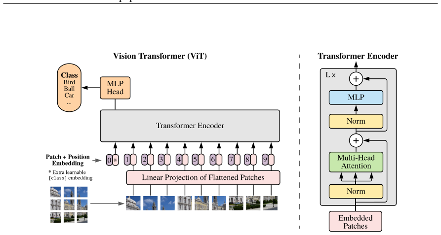
归纳偏置。我们注意到 Vision Transformer 的图像特定归纳偏置远少于 CNN。在 CNN 中，局部性、二维邻域结构和平移等变性在整个模型的每一层中都被内置。在 ViT 中，只有 MLP 层是局部且平移等变的，而自注意力层是全局的。二维邻域结构使用非常少：模型开始时将图像切分为块，以及微调时针对不同分辨率图像调整位置嵌入（如下所述）。除此之外，初始化时位置嵌入不携带块二维位置信息，块之间所有空间关系必须从头学习。
混合架构。作为原始图像块的替代，输入序列可由 CNN（LeCun et al., 1989）的特征图形成。在该混合模型中，块嵌入投影 \(\mathbf{E}\)（式 1）应用于从 CNN 特征图提取的块。特殊情况是块空间大小为 1×1，即输入序列通过简单展平特征图空间维度并投影到 Transformer 维度获得。分类输入嵌入和位置嵌入按上述方式添加。
通常，我们在大型数据集上预训练 ViT，并微调到（较小）下游任务。为此，移除预训练预测头，附加零初始化 \(D\times K\) 前馈层，其中 \(K\) 是下游类别数。在比预训练更高分辨率下微调通常有益（Touvron et al., 2019; Kolesnikov et al., 2020）。输入更高分辨率图像时，保持块大小不变，导致有效序列长度更大。Vision Transformer 可处理任意序列长度（受内存限制），但预训练位置嵌入可能不再有意义。因此，我们根据预训练位置嵌入在原图中的位置进行二维插值。注意，这种分辨率调整和块提取是手动向 Vision Transformer 注入关于图像二维结构归纳偏置的唯一位置。
我们评估 ResNet、Vision Transformer（ViT）和混合模型的表示学习能力。为理解每个模型的数据需求，我们在不同大小数据集上预训练并在许多基准任务上评估。考虑预训练计算成本时，ViT 表现非常有利，在大多数识别基准上以更低预训练成本达到最先进。最后，我们进行小型自监督实验，表明自监督 ViT 有未来潜力。
数据集。为探索模型可扩展性，我们使用 ILSVRC-2012 ImageNet 数据集（1k 类、1.3M 图像，下文称 ImageNet）、其超集 ImageNet-21k（21k 类、14M 图像，Deng et al., 2009）以及 JFT（18k 类、303M 高分辨率图像，Sun et al., 2017）。我们按照 Kolesnikov et al. (2020) 对预训练数据集相对于下游任务测试集去重。将训练好的模型迁移到多个基准任务：ImageNet 原始验证标签和清理后的 ReaL 标签（Beyer et al., 2020）、CIFAR-10/100（Krizhevsky, 2009）、Oxford-IIIT Pets（Parkhi et al., 2012）和 Oxford Flowers-102（Nilsback & Zisserman, 2008）。这些数据集预处理遵循 Kolesnikov et al. (2020)。
我们还在 19 任务 VTAB 分类套件上评估（Zhai et al., 2019b）。VTAB 评估低数据迁移到多样任务，每任务使用 1000 个训练样本。任务分为三组：Natural——类似上述任务，Pets、CIFAR 等；Specialized——医学和卫星图像；Structured——需要几何理解的任务，如定位。
| 模型 | 层数 | 隐藏大小 D | MLP 大小 | 头数 | 参数量 |
|---|---|---|---|---|---|
| ViT-Base | 12 | 768 | 3072 | 12 | 86M |
| ViT-Large | 24 | 1024 | 4096 | 16 | 307M |
| ViT-Huge | 32 | 1280 | 5120 | 16 | 632M |
模型变体。ViT 配置基于 BERT（Devlin et al., 2019）所用配置，见表 1。“Base”和“Large”直接采用 BERT，并增加更大的“Huge”模型。下文使用简写表示模型大小和输入块大小：例如 ViT-L/16 表示“Large”变体，输入块 \(16\times16\)。注意 Transformer 序列长度与块大小平方成反比，因此块更小的模型计算成本更高。
对于基线 CNN，我们使用 ResNet（He et al., 2016），但将批归一化层（Ioffe & Szegedy, 2015）替换为组归一化（Wu & He, 2018），并使用标准化卷积（Qiao et al., 2019）。这些修改改善迁移（Kolesnikov et al., 2020），我们将修改后的模型记为“ResNet (BiT)”。对于混合模型，将中间特征图送入 ViT，块大小为 1 个“像素”。为实验不同序列长度，要么 (i) 取常规 ResNet50 第 4 阶段输出，要么 (ii) 移除第 4 阶段，在第 3 阶段放置相同数量层（保持总层数），取扩展第 3 阶段输出。选项 (ii) 导致序列长度长 4 倍，ViT 模型更昂贵。
训练与微调。所有模型（包括 ResNet）使用 Adam（Kingma & Ba, 2015），\(\beta_1=0.9\)，\(\beta_2=0.999\)，批量大小 4096，并应用 0.1 的高权重衰减；我们发现这对所有模型的迁移都有用（附录 D.1 表明，与常见做法相反，在我们的设置中 Adam 对 ResNet 略优于 SGD）。使用线性学习率预热和衰减，细节见附录 B.1。微调使用带冲量的 SGD，批量大小 512，所有模型见附录 B.1.1。对于表 2 的 ImageNet 结果，我们在更高分辨率微调：ViT-L/16 为 512，ViT-H/14 为 518，并使用 Polyak & Juditsky (1992) 平均，因子 0.9999（Ramachandran et al., 2019; Wang et al., 2020b）。
指标。我们通过少样本或微调准确率报告下游数据集结果。微调准确率捕捉每个模型在相应数据集微调后的性能。少样本准确率通过求解正则化最小二乘回归问题获得，将训练图像子集的（冻结）表示映射到 \(\{-1,1\}^K\) 目标向量。该公式允许闭式恢复精确解。虽然主要关注微调性能，但有时使用线性少样本准确率进行快速即时评估，因为微调成本太高。
首先比较最大模型 ViT-H/14 和 ViT-L/16 与文献中最先进 CNN。第一个比较点是 Big Transfer（BiT）（Kolesnikov et al., 2020），使用大型 ResNet 进行监督迁移学习。第二个是 Noisy Student（Xie et al., 2020），这是一个大型 EfficientNet，在 ImageNet 和 JFT-300M 上使用半监督学习训练，并移除标签。目前，Noisy Student 是 ImageNet 的最先进，BiT-L 是本文报告的其他数据集的最先进。所有模型在 TPUv3 硬件上训练，我们报告预训练每个模型所用的 TPUv3-core-days，即用于训练的 TPU v3 核心数（每芯片 2 个）乘以训练天数。
表 2 显示结果。在 JFT-300M 上预训练的较小 ViT-L/16 在所有任务上优于 BiT-L（同样在该数据集预训练），同时训练所需计算资源显著更少。更大模型 ViT-H/14 进一步提升性能，尤其是在更具挑战性的数据集——ImageNet、CIFAR-100 和 VTAB 套件上。有趣的是，该模型预训练计算仍显著少于先前最先进。然而我们注意到，预训练效率不仅受架构选择影响，还受训练计划、优化器、权重衰减等其他参数影响。我们在 4.4 节对不同的架构进行了性能与计算的受控研究。最后，在公开 ImageNet-21k 数据集上预训练的 ViT-L/16 在大多数数据集上也表现良好，同时预训练资源更少：可使用标准云 TPUv3（8 核）约 30 天训练。
图 2 将 VTAB 任务分解为各自组，并与该基准先前 SOTA 方法比较：BiT、VIVI——在 ImageNet 和 Youtube 上联合训练的 ResNet（Tschannen et al., 2020），以及 S4L——ImageNet 上的监督加半监督学习（Zhai et al., 2019a）。ViT-H/14 在 Natural 和 Structured 任务上优于 BiT-R152x4 和其他方法。在 Specialized 上，前两名模型性能相似。
| 模型 | 预训练数据 | ImageNet | ImageNet-ReaL | CIFAR-100 | VTAB (19 任务) | 预训练计算 |
|---|---|---|---|---|---|---|
| ViT-H/14 | JFT-300M | 88.55 | 90.72 | 94.55 | 77.63 | 约 2.5k TPUv3-core-days |
| ViT-L/16 | JFT-300M | 87.76 | 90.54 | 93.90 | 76.11 | 约 0.68k TPUv3-core-days |
| BiT-L | JFT-300M | 87.54 | 90.54 | 93.51 | 76.29 | 约 9.9k TPUv3-core-days |
| Noisy Student | ImageNet+JFT | 88.4/88.5* | — | — | — | 约 12.3k TPUv3-core-days |
| ViT-L/16 | ImageNet-21k | 85.30 | 88.35 | 93.44 | — | 约 0.23k TPUv3-core-days |
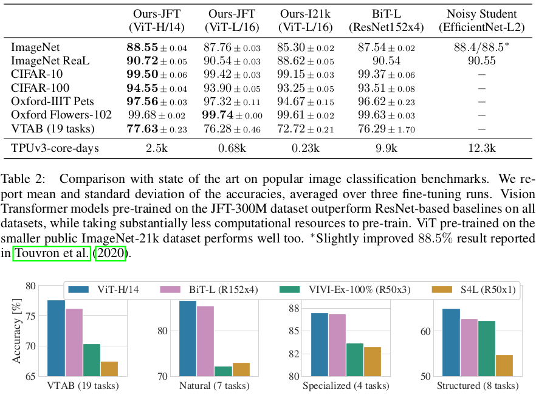
Vision Transformer 在大型 JFT-300M 数据集上预训练时表现良好。相比 ResNet，ViT 的视觉归纳偏置更少，数据集大小有多关键？我们进行两组实验。
第一，在规模递增的数据集上预训练 ViT：ImageNet、ImageNet-21k、JFT-300M。为提升较小数据集性能，优化三个基本正则化参数——权重衰减、dropout 和标签平滑。图 3 显示微调到 ImageNet 后的结果（其他数据集结果见表 5）。在最小数据集 ImageNet 上预训练时，ViT-Large 模型尽管有（适度）正则化，仍不如 ViT-Base。在 ImageNet-21k 预训练时，二者性能相似。只有在 JFT-300M 上，才看到更大模型的全部好处。图 3 还显示不同大小 BiT 模型覆盖的性能区域。BiT CNN 在 ImageNet 上优于 ViT，但数据集更大时，ViT 反超。
第二，在 9M、30M、90M 随机子集以及完整 JFT-300M 上训练模型。对较小子集不进行额外正则化，所有设置使用相同超参数。这样评估内在模型属性，而非正则化效果。但使用早停，报告训练中达到的最佳验证准确率。为节省计算，报告少样本线性准确率而非完整微调准确率。图 4 包含结果。在较小数据集上，Vision Transformer 比计算成本相当的 ResNet 过拟合更多。例如 ViT-B/32 略快于 ResNet50；在 9M 子集上差得多，但在 90M+ 子集上更好。ResNet152x2 和 ViT-L/16 同样如此。该结果强化了直觉：卷积归纳偏置对较小数据集有用，但对较大数据集，直接从数据学习相关模式足够，甚至有益。
总体而言，ImageNet 少样本结果（图 4）以及 VTAB 低数据结果（表 2）对极低数据迁移似乎有希望。进一步分析 ViT 少样本特性是未来工作的激动方向。
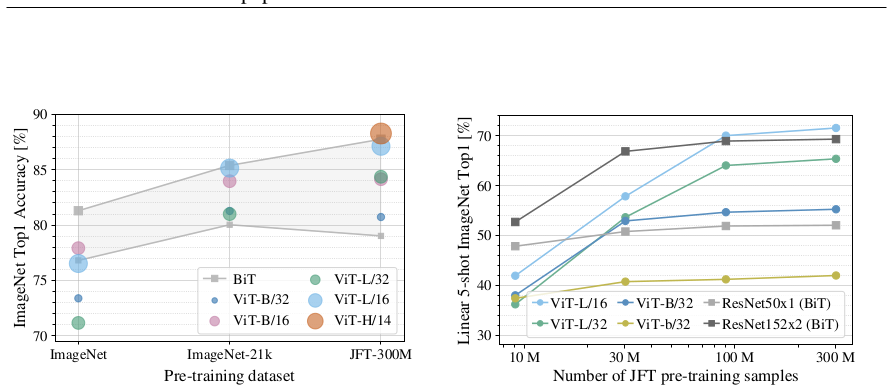
我们通过评估从 JFT-300M 的迁移性能，对不同模型进行受控扩展研究。该设置中数据大小不瓶颈模型性能，评估每个模型性能与预训练成本。模型集包括：7 个 ResNet（R50x1、R50x2、R101x1、R152x1、R152x2，预训练 7 个 epoch，加 R152x2 和 R200x3 预训练 14 个 epoch）；6 个 Vision Transformer（ViT-B/32、B/16、L/32、L/16，预训练 7 个 epoch，加 L/16 和 H/14 预训练 14 个 epoch）；5 个混合模型（R50+ViT-B/32、B/16、L/32、L/16 预训练 7 个 epoch，加 R50+ViT-L/16 预训练 14 个 epoch；混合模型名称末尾数字表示 ResNet 骨干总下采样率，而非块大小）。
图 5 包含迁移性能与总预训练计算（计算成本细节见附录 D.5）。每个模型详细结果见附录表 6。可观察到几个模式。第一，Vision Transformer 在性能/计算权衡上主导 ResNet。ViT 使用约 \(2-4\times\) 更少计算达到相同性能（5 个数据集平均）。第二，混合模型在小计算预算下略优于 ViT，但差异在更大模型上消失。这有些令人惊讶，因为人们可能预期卷积局部特征处理在任何规模都有助 ViT。第三，Vision Transformer 在尝试范围内似乎未饱和，激励未来扩展努力。
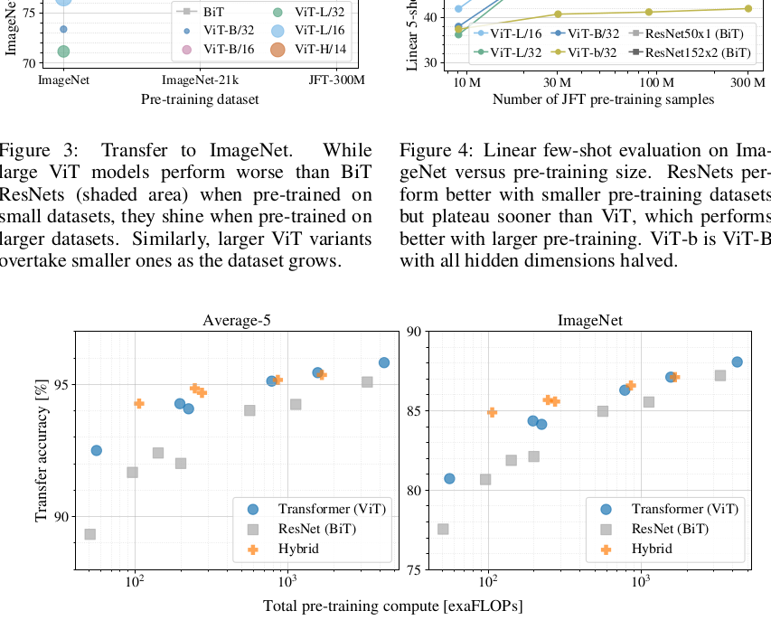
为初步理解 Vision Transformer 如何处理图像数据，我们分析其内部表示。Vision Transformer 第一层将展平块线性投影到低维空间（式 1）。图 7（左）显示学习到的嵌入滤波器的顶部主成分。这些成分类似于每个块内细结构低维表示的合理基函数。
投影后，将学习到的位置嵌入加到块表示。图 7（中）显示模型学会在位置嵌入相似性中编码图像内距离，即更近的块倾向于具有更相似的位置嵌入。此外，出现行列结构；同一行/列的块具有相似嵌入。最后，较大网格有时出现正弦结构（附录 D）。位置嵌入学会表示二维图像拓扑，这解释了为什么手工设计的二维感知嵌入变体没有带来改进（附录 D.4）。
自注意力允许 ViT 即使在最低层也整合整个图像的信息。我们研究网络在多大程度上利用该能力。具体地，基于注意力权重计算信息整合的平均图像空间距离（图 7 右）。该“注意力距离”类似于 CNN 中的感受野大小。
我们发现，一些头在最低层就已经关注图像大部分区域，表明模型确实使用了全局整合信息的能力。其他注意力头在低层始终具有较小注意力距离。这种高度局部化注意力在 Transformer 前应用 ResNet 的混合模型中不那么明显（图 7 右），表明它可能发挥与 CNN 早期卷积层类似的功能。此外，注意力距离随网络深度增加。全局上，我们发现模型关注对分类语义相关的图像区域（图 6）。
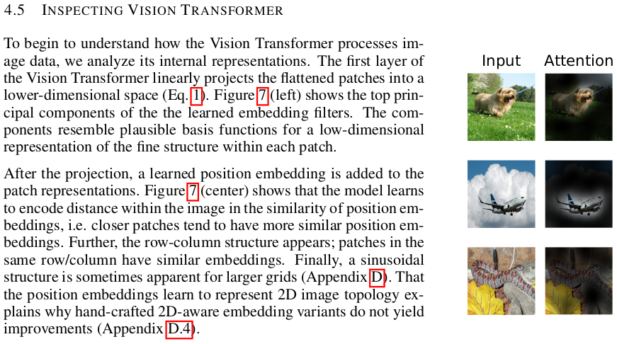
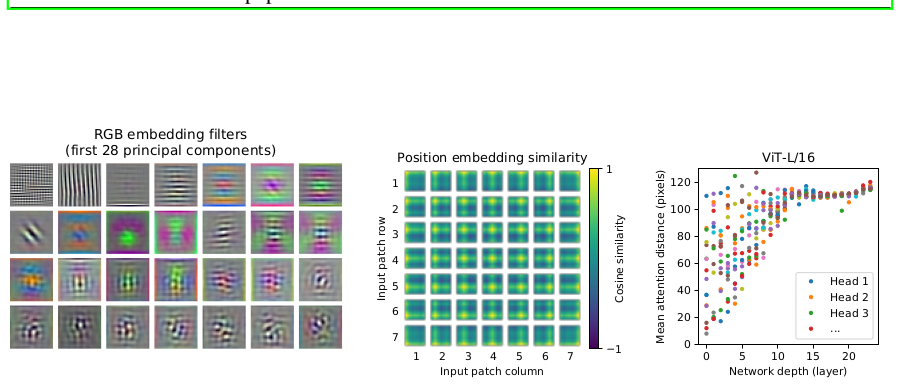
Transformer 在 NLP 任务上表现出色。然而，其成功不仅来自卓越可扩展性，还来自大规模自监督预训练（Devlin et al., 2019; Radford et al., 2018）。我们也对掩码块预测自监督进行初步探索，模仿 BERT 使用的掩码语言建模任务。自监督预训练下，较小的 ViT-B/16 模型在 ImageNet 上达到 \(79.9\%\) 准确率，比从头训练显著提高 \(2\%\)，但仍比监督预训练低 \(4\%\)。附录 B.1.2 包含进一步细节。我们将对比式预训练（Chen et al., 2020b; He et al., 2020; Bachman et al., 2019; Hénaff et al., 2020）的探索留待未来工作。
我们探索了 Transformer 在图像识别中的直接应用。与先前在计算机视觉中使用自注意力的工作不同，除初始块提取步骤外，我们未将图像特定归纳偏置引入架构。相反，我们将图像解释为块序列，并用 NLP 中使用的标准 Transformer 编码器处理。这种简单但可扩展的策略与大规模数据集预训练结合时效果出奇地好。因此，Vision Transformer 在许多图像分类数据集上匹配或超越最先进，同时预训练相对便宜。
尽管这些初步结果令人鼓舞，仍有许多挑战。其一是将 ViT 应用于其他计算机视觉任务，如检测和分割。我们的结果与 Carion et al. (2020) 的结果一起表明该方法有前景。另一个挑战是继续探索自监督预训练方法。初步实验显示自监督预训练有改进，但自监督与大规模监督预训练之间仍有很大差距。最后，进一步扩展 ViT 可能带来性能提升。
本工作于柏林、苏黎世和阿姆斯特丹完成。我们感谢 Google 许多同事的帮助，特别是 Andreas Steiner 在基础设施和代码开源方面的关键帮助；Joan Puigcerver 和 Maxim Neumann 在大规模训练基础设施方面的帮助；Dmitry Lepikhin、Aravindh Mahendran、Daniel Keysers、Mario Lučić、Noam Shazeer、Ashish Vaswani 和 Colin Raffel 的有益讨论。
Samira Abnar and Willem Zuidema. Quantifying attention flow in transformers. In ACL, 2020.
Philip Bachman, R Devon Hjelm, and William Buchwalter. Learning representations by maximizing mutual information across views. In NeurIPS, 2019.
Alexei Baevski and Michael Auli. Adaptive input representations for neural language modeling. In ICLR, 2019.
I. Bello, B. Zoph, Q. Le, A. Vaswani, and J. Shlens. Attention augmented convolutional networks. In ICCV, 2019.
Lucas Beyer, Olivier J. Hénaff, Alexander Kolesnikov, Xiaohua Zhai, and Aaron van den Oord. Are we done with imagenet? arXiv, 2020.
Tom B Brown, Benjamin Mann, Nick Ryder, Melanie Subbiah, Jared Kaplan, Prafulla Dhariwal, Arvind Neelakantan, Pranav Shyam, Girish Sastry, Amanda Askell, et al. Language models are few-shot learners. arXiv, 2020.
Nicolas Carion, Francisco Massa, Gabriel Synnaeve, Nicolas Usunier, Alexander Kirillov, and Sergey Zagoruyko. End-to-end object detection with transformers. In ECCV, 2020.
Mark Chen, Alec Radford, Rewon Child, Jeff Wu, and Heewoo Jun. Generative pretraining from pixels. In ICML, 2020a.
Ting Chen, Simon Kornblith, Mohammad Norouzi, and Geoffrey E. Hinton. A simple framework for contrastive learning of visual representations. In ICML, 2020b.
Yen-Chun Chen, Linjie Li, Licheng Yu, Ahmed El Kholy, Faisal Ahmed, Zhe Gan, Yu Cheng, and Jingjing Liu. UNITER: Universal Image-Text Representation Learning. In ECCV, 2020c.
Rewon Child, Scott Gray, Alec Radford, and Ilya Sutskever. Generating long sequences with sparse transformers. arXiv, 2019.
Jean-Baptiste Cordonnier, Andreas Loukas, and Martin Jaggi. On the relationship between self-attention and convolutional layers. In ICLR, 2020.
J. Deng, W. Dong, R. Socher, L. Li, Kai Li, and Li Fei-Fei. Imagenet: A large-scale hierarchical image database. In CVPR, 2009.
Jacob Devlin, Ming-Wei Chang, Kenton Lee, and Kristina Toutanova. BERT: Pre-training of deep bidirectional transformers for language understanding. In NAACL, 2019.
Josip Djolonga, Jessica Yung, Michael Tschannen, Rob Romijnders, Lucas Beyer, Alexander Kolesnikov, Joan Puigcerver, Matthias Minderer, Alexander D’Amour, Dan Moldovan, Sylvain Gelly, Neil Houlsby, Xiaohua Zhai, and Mario Lucic. On robustness and transferability of convolutional neural networks. arXiv, 2020.
Kaiming He, Xiangyu Zhang, Shaoqing Ren, and Jian Sun. Deep residual learning for image recognition. In CVPR, 2016.
Kaiming He, Haoqi Fan, Yuxin Wu, Saining Xie, and Ross Girshick. Momentum contrast for unsupervised visual representation learning. In CVPR, 2020.
Jonathan Ho, Nal Kalchbrenner, Dirk Weissenborn, and Tim Salimans. Axial attention in multidimensional transformers. arXiv, 2019.
Han Hu, Jiayuan Gu, Zheng Zhang, Jifeng Dai, and Yichen Wei. Relation networks for object detection. In CVPR, 2018.
Han Hu, Zheng Zhang, Zhenda Xie, and Stephen Lin. Local relation networks for image recognition. In ICCV, 2019.
Zilong Huang, Xinggang Wang, Yunchao Wei, Lichao Huang, Humphrey Shi, Wenyu Liu, and Thomas S. Huang. Ccnet: Criss-cross attention for semantic segmentation. In ICCV, 2020.
Olivier J. Hénaff, Aravind Srinivas, Jeffrey De Fauw, Ali Razavi, Carl Doersch, S. M. Ali Eslami, and Aaron van den Oord. Data-efficient image recognition with contrastive predictive coding. In ICML, 2020.
Sergey Ioffe and Christian Szegedy. Batch normalization: Accelerating deep network training by reducing internal covariate shift. In ICML, 2015.
Diederik Kingma and Jimmy Ba. Adam: A method for stochastic optimization. In ICLR, 2015.
Alexander Kolesnikov, Lucas Beyer, Xiaohua Zhai, Joan Puigcerver, Jessica Yung, Sylvain Gelly, and Neil Houlsby. Big transfer (BiT): General visual representation learning. In ECCV, 2020.
Alex Krizhevsky. Learning multiple layers of features from tiny images. 2009.
Alex Krizhevsky, Ilya Sutskever, and Geoffrey E Hinton. Imagenet classification with deep convolutional neural networks. In NIPS, 2012.
Yann LeCun, Bernhard Boser, John S Denker, Donnie Henderson, Richard E Howard, Wayne Hubbard, and Lawrence D Jackel. Backpropagation applied to handwritten zip code recognition. Neural computation, 1989.
Dmitry Lepikhin, HyoukJoong Lee, Yuanzhong Xu, Dehao Chen, Orhan Firat, Yanping Huang, Maxim Krikun, Noam Shazeer, and Zhifeng Chen. Gshard: Scaling giant models with conditional computation and automatic sharding. arXiv, 2020.
Li Li, Zhe Gan, Yitong Li, Xiaodong Liu, Jianfeng Gao, Yelong Shen, and Lawrence Carin. Relation-aware graph attention networks. arXiv, 2019.
Francesco Locatello, Dirk Weissenborn, Thomas Unterthiner, Aravindh Mahendran, Georg Heigold, Jakob Uszkoreit, Alexey Dosovitskiy, and Mario Lucic. Object-centric learning with slot attention. In NeurIPS, 2020.
Jiasen Lu, Dhruv Batra, Devi Parikh, and Stefan Lee. Vilbert: Pretraining task-agnostic visiolinguistic representations for vision-and-language tasks. In NeurIPS, 2019.
Dhruv Mahajan, Ross Girshick, Vignesh Ramanathan, Kaiming He, Manohar Paluri, Yixuan Li, Ashwin Bharambe, and Laurens van der Maaten. Exploring the limits of weakly supervised pretraining. In ECCV, 2018.
Niki Parmar, Ashish Vaswani, Jakob Uszkoreit, Lukasz Kaiser, Noam Shazeer, Alexander Ku, and Dustin Tran. Image transformer. In ICML, 2018.
Boris T Polyak and Anatoli B Juditsky. Acceleration of stochastic approximation by averaging. SIAM Journal on Control and Optimization, 1992.
Prajit Ramachandran, Niki Parmar, Ashish Vaswani, Irwan Bello, Anselm Levskaya, and Jonathon Shlens. Stand-alone self-attention in vision models. In NeurIPS, 2019.
Chen Sun, Abhinav Shrivastava, Saurabh Singh, and Abhinav Gupta. Revisiting unreasonable effectiveness of data in deep learning era. In ICCV, 2017.
Chen Sun, Austin Myers, Carl Vondrick, Kevin Murphy, and Cordelia Schmid. Videobert: A joint model for video and language representation learning. In ICCV, 2019.
Hugo Touvron, Andrea Vedaldi, Matthijs Douze, and Herve Jegou. Fixing the train-test resolution discrepancy. In NeurIPS, 2019.
Hugo Touvron, Andrea Vedaldi, Matthijs Douze, and Herve Jegou. Fixing the train-test resolution discrepancy: Fixefficientnet. arXiv preprint arXiv:2003.08237, 2020.
Michael Tschannen, Josip Djolonga, Marvin Ritter, Aravindh Mahendran, Neil Houlsby, Sylvain Gelly, and Mario Lucic. Self-supervised learning of video-induced visual invariances. In CVPR, 2020.
Ashish Vaswani, Noam Shazeer, Niki Parmar, Jakob Uszkoreit, Llion Jones, Aidan N Gomez, Lukasz Kaiser, and Illia Polosukhin. Attention is all you need. In NIPS, 2017.
Huiyu Wang, Yukun Zhu, Bradley Green, Hartwig Adam, Alan Yuille, and Liang-Chieh Chen. Axial-deeplab: Stand-alone axial-attention for panoptic segmentation. In ECCV, 2020a.
Huiyu Wang, Yukun Zhu, Bradley Green, Hartwig Adam, Alan Yuille, and Liang-Chieh Chen. Axial-deeplab: Stand-alone axial-attention for panoptic segmentation. arXiv preprint arXiv:2003.07853, 2020b.
Qiang Wang, Bei Li, Tong Xiao, Jingbo Zhu, Changliang Li, Derek F. Wong, and Lidia S. Chao. Learning deep transformer models for machine translation. In ACL, 2019.
Xiaolong Wang, Ross Girshick, Abhinav Gupta, and Kaiming He. Non-local neural networks. In CVPR, 2018.
Dirk Weissenborn, Oscar Tackström, and Jakob Uszkoreit. Scaling autoregressive video models. In ICLR, 2019.
Bichen Wu, Chenfeng Xu, Xiaoliang Dai, Alvin Wan, Peizhao Zhang, Masayoshi Tomizuka, Kurt Keutzer, and Peter Vajda. Visual transformers: Token-based image representation and processing for computer vision. arXiv, 2020.
Yuxin Wu and Kaiming He. Group normalization. In ECCV, 2018.
Qizhe Xie, Minh-Thang Luong, Eduard Hovy, and Quoc V. Le. Self-training with noisy student improves imagenet classification. In CVPR, 2020.
Xiaohua Zhai, Avital Oliver, Alexander Kolesnikov, and Lucas Beyer. S4L: Self-Supervised Semi-Supervised Learning. In ICCV, 2019a.
Xiaohua Zhai, Joan Puigcerver, Alexander Kolesnikov, Pierre Ruyssen, Carlos Riquelme, Mario Lucic, Josip Djolonga, Andre Susano Pinto, Maxim Neumann, Alexey Dosovitskiy, et al. A large-scale study of representation learning with the visual task adaptation benchmark. arXiv preprint arXiv:1910.04867, 2019b.
Hengshuang Zhao, Jiaya Jia, and Vladlen Koltun. Exploring self-attention for image recognition. In CVPR, 2020.
标准 qkv 自注意力（SA，Vaswani et al. (2017)）是神经架构的流行构建块。对于输入序列 \(\mathbf{z}\in\mathbb{R}^{N\times D}\) 中每个元素，我们计算序列中所有值 \(\mathbf{v}\) 的加权和。注意力权重 \(A_{ij}\) 基于序列两个元素及其各自查询 \(\mathbf{q}^i\) 和键 \(\mathbf{k}^j\) 表示的成对相似性。
多头自注意力（MSA）是 SA 的扩展，并行运行 \(k\) 个自注意力操作（称为“头”），并投影其拼接输出。为在改变 \(k\) 时保持计算和参数量恒定，通常将 \(D_h\)（式 5）设为 \(D/k\)。
表 3 总结不同模型的训练设置。我们发现强正则化是在 ImageNet 上从头训练的关键。Dropout 使用时，除 qkv 投影外每个稠密层后应用，并在位置嵌入加到块嵌入后直接应用。混合模型训练设置与 ViT 对应模型完全相同。最后，所有训练在 224 分辨率下进行。
| 模型 | 数据集 | Epochs | 基础学习率 | 学习率衰减 | 权重衰减 | Dropout |
|---|---|---|---|---|---|---|
| ViT-B/(16,32) | JFT-300M | 7 | 8·10⁻⁴ | linear | 0.1 | 0.0 |
| ViT-L/32 | JFT-300M | 7 | 6·10⁻⁴ | linear | 0.1 | 0.0 |
| ViT-L/16 | JFT-300M | 7/14 | 4·10⁻⁴ | linear | 0.1 | 0.0 |
| ViT-H/14 | JFT-300M | 14 | 3·10⁻⁴ | linear | 0.1 | 0.0 |
| R50x{1,2} | JFT-300M | 7 | 10⁻³ | linear | 0.1 | 0.0 |
| R101x1 | JFT-300M | 7 | 8·10⁻⁴ | linear | 0.1 | 0.0 |
| R152x{1,2} | JFT-300M | 7 | 6·10⁻⁴ | linear | 0.1 | 0.0 |
| R50+ViT-B/(16,32) | JFT-300M | 7 | 8·10⁻⁴ | linear | 0.1 | 0.0 |
| R50+ViT-L/32 | JFT-300M | 7 | 2·10⁻⁴ | linear | 0.1 | 0.0 |
| R50+ViT-L/16 | JFT-300M | 7/14 | 4·10⁻⁴ | linear | 0.1 | 0.0 |
| ViT-B/(16,32) | ImageNet-21k | 90 | 10⁻³ | linear | 0.03 | 0.1 |
| ViT-L/(16,32) | ImageNet-21k | 30/90 | 10⁻³ | linear | 0.03 | 0.1 |
| ViT-* | ImageNet | 300 | 3·10⁻³ | cosine | 0.3 | 0.1 |
所有 ViT 模型使用冲量 0.9 的 SGD 微调。对学习率进行小网格搜索，学习率范围见表 4。为此，使用训练集小子集（Pets 和 Flowers 用 10%，CIFAR 用 2%，ImageNet 用 1%）作为开发集，在剩余数据上训练。最终结果在整个训练集上训练，在相应测试数据上评估。ResNet 和混合模型微调使用完全相同设置，唯一例外是 ImageNet 上学习率扫描增加 0.06。此外，对 ResNet 还运行 Kolesnikov et al. (2020) 设置，并在该运行和我们的扫描中选择最佳结果。最后，除非另有说明，所有微调实验在 384 分辨率下运行（训练和微调分辨率不同是常见做法（Kolesnikov et al., 2020））。
将 ViT 模型迁移到另一个数据集时，移除整个头（两个线性层），替换为单个零初始化线性层，输出目标数据集所需类别数。我们发现这比简单重新初始化最后一层略更稳健。
对于 VTAB，遵循 Kolesnikov et al. (2020) 协议，所有任务使用相同超参数设置。学习率 0.01，训练 2500 步（表 4）。通过两个学习率和两个调度的小扫描选择该设置，选择在 200 示例验证集上 VTAB 分数最高的设置。遵循 Kolesnikov et al. (2020) 预处理，但不使用任务特定输入分辨率。相反，我们发现 Vision Transformer 从高分辨率 \((384\times384)\) 对所有任务最受益。
| 数据集 | 学习率 | 批量大小 | 步数 | 分辨率 |
|---|---|---|---|---|
| ImageNet | 0.01 / 0.03 / 0.06 | 512 | — | 512 |
| CIFAR-10/100 | 0.01 / 0.03 | 512 | — | 384 |
| Pets / Flowers | 0.01 / 0.03 | 512 | — | 384 |
| VTAB | 0.01 | 512 | 2500 | 384 |
初步自监督实验采用掩码块预测目标。损坏 50% 块嵌入：80% 替换为可学习 [mask] 嵌入，10% 替换为随机其他块嵌入，10% 保持原样。该设置与 Devlin et al. (2019) 用于语言的设置非常相似。最后，使用各自块表示预测每个损坏块的 3 位平均颜色（共 512 色）。
在 JFT 上以批量大小 4096 训练自监督模型 1M 步（约 14 个 epoch）。使用 Adam，基础学习率 \(2\cdot10^{-4}\)，预热 10k 步，余弦学习率衰减。预训练预测目标尝试以下设置：1）仅预测平均 3 位颜色（1 个 512 色预测）；2）并行预测 \(16\times16\) 块的 \(4\times4\) 下采样版本，3 位颜色（16 个 512 色预测）；3）使用 L2 回归完整块（对 3 个 RGB 通道进行 256 次回归）。令人惊讶的是，三者都相当好，L2 略差。仅报告选项 1）的最终结果，因为其少样本性能最好。还实验了 Devlin et al. (2019) 使用的 15% 损坏率，但少样本指标略差。
最后，我们想指出，我们的掩码块预测实例不需要如此大量预训练或 JFT 等大型数据集，就能在 ImageNet 分类上带来类似性能提升。即，在 100k 预训练步后观察到下游性能收益递减，在 ImageNet 上预训练也看到类似收益。
我们报告论文图中对应的详细结果。表 5 对应正文图 3，显示不同 ViT 模型在规模递增数据集（ImageNet、ImageNet-21k、JFT-300M）上预训练后的迁移性能。表 6 对应正文图 5，显示不同大小 ViT、ResNet 和混合模型的迁移性能，以及预训练估计计算成本。
| 预训练数据 | 模型 | CIFAR-10 | CIFAR-100 | ImageNet | ImageNet ReaL | Flowers-102 | Pets |
|---|---|---|---|---|---|---|---|
| ImageNet | ViT-B/16 | 98.13 | 87.13 | 77.91 | 83.57 | 89.49 | 93.81 |
| ViT-B/32 | 97.77 | 86.31 | 73.38 | 79.56 | 85.43 | 92.04 | |
| ViT-L/16 | 97.86 | 86.35 | 76.53 | 82.19 | 89.66 | 93.64 | |
| ViT-L/32 | 97.94 | 87.07 | 71.16 | 77.83 | 86.36 | 91.35 | |
| ViT-H/14 | — | — | — | — | — | — | |
| ImageNet-21k | ViT-B/16 | 98.95 | 91.67 | 83.97 | 88.35 | 99.38 | 94.43 |
| ViT-B/32 | 98.79 | 91.97 | 81.28 | 86.63 | 99.11 | 93.02 | |
| ViT-L/16 | 99.16 | 93.44 | 85.15 | 88.40 | 99.61 | 94.73 | |
| ViT-L/32 | 99.13 | 93.04 | 80.99 | 85.65 | 99.19 | 93.09 | |
| ViT-H/14 | 99.27 | 93.82 | 85.13 | 88.70 | 99.51 | 94.82 | |
| ViT-B/16 | 99.00 | 91.87 | 84.15 | 88.85 | 99.56 | 95.80 | |
| JFT-300M | ViT-B/32 | 98.61 | 90.49 | 80.73 | 86.27 | 99.27 | 93.40 |
| ViT-L/16 | 99.38 | 94.04 | 87.12 | 89.99 | 99.56 | 97.11 | |
| ViT-L/32 | 99.19 | 92.52 | 84.37 | 88.28 | 99.45 | 95.83 | |
| ViT-H/14 | 99.50 | 94.55 | 88.04 | 90.33 | 99.68 | 97.56 |
| 模型 | Epochs | ImageNet | ImageNet ReaL | CIFAR-10 | CIFAR-100 | Pets | Flowers | exaFLOPs |
|---|---|---|---|---|---|---|---|---|
| ViT-B/32 | 7 | 80.73 | 86.27 | 98.61 | 90.49 | 93.40 | 99.27 | 55 |
| ViT-B/16 | 7 | 84.15 | 88.85 | 99.00 | 91.87 | 95.80 | 99.56 | 224 |
| ViT-L/32 | 7 | 84.37 | 88.28 | 99.19 | 92.52 | 95.83 | 99.45 | 196 |
| ViT-L/16 | 7 | 86.30 | 89.43 | 99.38 | 93.46 | 96.81 | 99.66 | 783 |
| ViT-L/16 | 14 | 87.12 | 89.99 | 99.38 | 94.04 | 97.11 | 99.56 | 1567 |
| ViT-H/14 | 14 | 88.08 | 90.36 | 99.50 | 94.71 | 97.11 | 99.71 | 4262 |
| ResNet50x1 | 7 | 77.54 | 84.56 | 97.67 | 86.07 | 91.11 | 94.26 | 50 |
| ResNet50x2 | 7 | 82.12 | 87.94 | 98.29 | 89.20 | 93.43 | 97.02 | 199 |
| ResNet101x1 | 7 | 80.67 | 87.07 | 98.48 | 89.17 | 94.08 | 95.95 | 96 |
| ResNet152x1 | 7 | 81.88 | 87.96 | 98.82 | 90.22 | 94.17 | 96.94 | 141 |
| ResNet152x2 | 7 | 84.97 | 89.69 | 99.06 | 92.05 | 95.37 | 98.62 | 563 |
| ResNet152x2 | 14 | 85.56 | 89.89 | 99.24 | 91.92 | 95.75 | 98.75 | 1126 |
| ResNet200x3 | 14 | 87.22 | 90.15 | 99.34 | 93.53 | 96.32 | 99.04 | 3306 |
| R50x1+ViT-B/32 | 7 | 84.90 | 89.15 | 99.01 | 92.24 | 95.75 | 99.46 | 106 |
| R50x1+ViT-B/16 | 7 | 85.58 | 89.65 | 99.14 | 92.63 | 96.65 | 99.40 | 274 |
| R50x1+ViT-L/32 | 7 | 85.68 | 89.04 | 99.24 | 92.93 | 96.97 | 99.43 | 246 |
| R50x1+ViT-L/16 | 7 | 86.60 | 89.72 | 99.18 | 93.64 | 97.03 | 99.40 | 859 |
| R50x1+ViT-L/16 | 14 | 87.12 | 89.76 | 99.31 | 93.89 | 97.36 | 99.11 | 1668 |
ResNet 通常用 SGD 训练，我们使用 Adam 作为优化器相当不寻常。这里展示促使该选择的实验。比较两个 ResNet（50x1 和 152x2）在 JFT 上用 SGD 和 Adam 预训练后的微调性能。SGD 使用 Kolesnikov et al. (2020) 推荐的超参数。结果见表 7。Adam 预训练在大多数数据集和平均上优于 SGD 预训练。这证明选择 Adam 在 JFT 上预训练 ResNet 是合理的。注意绝对数字低于 Kolesnikov et al. (2020) 报告，因为我们只预训练 7 个 epoch，而非 30 个。
| 模型 | 预训练优化器 | ImageNet 5-shot | Average 5-shot |
|---|---|---|---|
| R50x1 | Adam | 优于 SGD | 优于 SGD |
| R152x2 | Adam | 优于 SGD | 优于 SGD |
我们对 Transformer 架构不同维度的扩展进行消融，以找出最适合扩展到超大模型的维度。图 8 显示不同配置在 ImageNet 上的 5-shot 性能。所有配置基于 8 层、\(D=1024\)、\(D_{MLP}=2048\)、块大小 32 的 ViT 模型，即所有线交点。可以看到，扩展深度带来最大改进，直到 64 层都清晰可见。但 16 层后已出现收益递减。有趣的是，扩展网络宽度似乎带来最小变化。减小块大小从而增加有效序列长度，在没有引入参数的情况下显示出惊人稳健的改进。这些发现表明，计算量可能比参数量更能预测性能，扩展应强调深度而非宽度。总体而言，按比例扩展所有维度带来稳健改进。
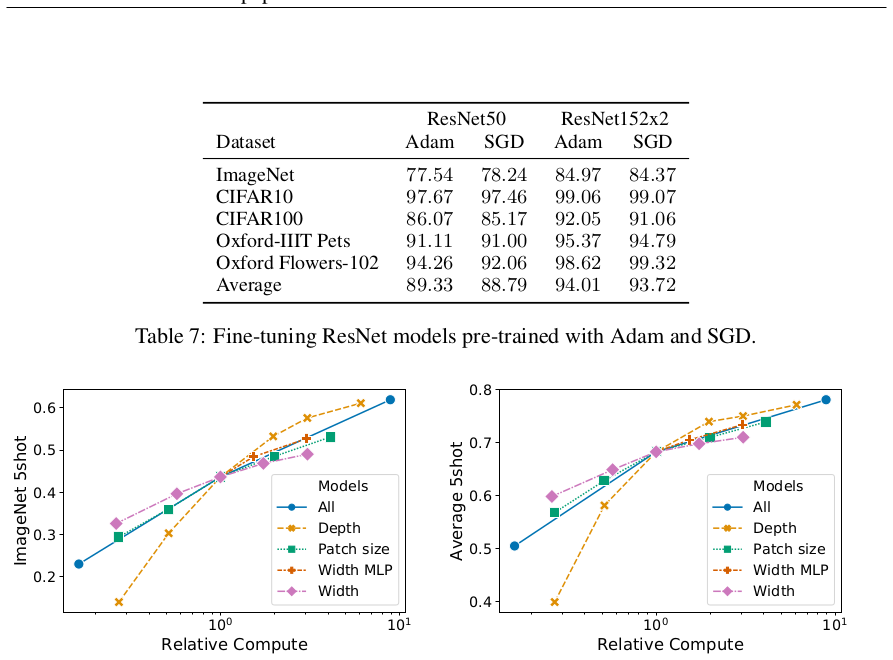
为尽可能接近原始 Transformer 模型，我们使用额外 [class] 词元作为图像表示。该词元输出随后通过小型多层感知机（MLP）转换为类别预测，单隐藏层使用 tanh 非线性。该设计继承自文本 Transformer 模型，全文使用。最初尝试仅使用图像块嵌入、全局平均池化（GAP）后接线性分类器——类似 ResNet 最终特征图——表现非常差。然而我们发现，这既不是由于额外词元，也不是由于 GAP 操作。性能差异完全由需要不同学习率解释，见图 9。
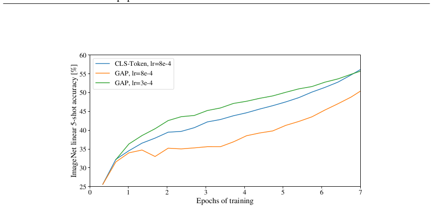
| 位置嵌入 | 默认/Stem | 每层 | 每层共享 | 无位置嵌入 |
|---|---|---|---|---|
| 1-D 位置嵌入 | 0.64206 | 0.63964 | 0.64292 | 0.61382 |
| 2-D 位置嵌入 | 0.64001 | 0.64046 | 0.64022 | — |
| 相对位置嵌入 | 0.64032 | — | — | — |
我们消融不同位置嵌入编码空间信息的方式：
除不同编码方式外，还尝试不同注入方式：一维和二维位置嵌入三种情况：(1) 在模型 stem 后、输入 Transformer 编码器前将位置嵌入加到输入（本文其他实验默认）；(2) 在每层开始时学习并添加位置嵌入；(3) 在每层开始时添加学习位置嵌入（层间共享）。表 8 总结 ViT-B/16 消融结果。可以看到，无位置嵌入模型与有位置嵌入模型之间差距很大，但不同位置信息编码方式之间差异很小甚至没有。我们推测，由于 Transformer 编码器在块级而非像素级输入上操作，空间信息编码方式的差异不那么重要。更准确地说，块级输入的空间维度远小于原始像素级输入，例如 \(14\times14\) 而非 \(224\times224\)，在这种分辨率下学习表示空间关系对这些不同位置编码策略同样容易。即便如此，网络学习到的位置嵌入相似性具体模式取决于训练超参数（图 10）。
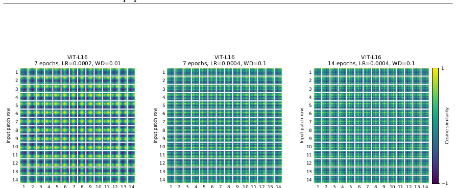
我们还关心架构在硬件上的真实速度，由于 lane 宽度和缓存大小等细节，理论 FLOPs 并不总能很好预测。为此，在 TPUv3 加速器上对主要模型进行推理速度计时；推理与反向传播速度差异是模型无关常数因子。
图 12（左）显示一个核心每秒可处理多少图像，跨各种输入大小。每个点指在广泛批量大小范围内测得的峰值性能。可以看到，ViT 随图像大小的理论双二次缩放仅在最大模型最大分辨率下才勉强开始出现。另一个感兴趣量是每个模型可放入一个核心的最大批量大小，越大越有利于扩展到大数据集。图 12（右）显示同一组模型的该量。这表明大型 ViT 模型在内存效率上明显优于 ResNet 模型。
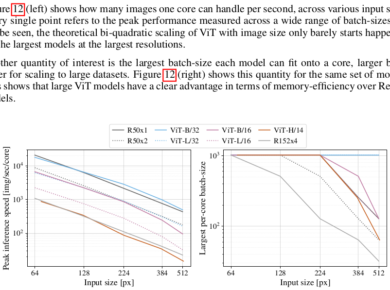
轴向注意力（Huang et al., 2020; Ho et al., 2019）是一种简单有效的技术，可在组织为多维张量的大型输入上运行自注意力。一般思想是执行多个注意力操作，每个沿输入张量单个轴，而不是对展平输入应用一维注意力。轴向注意力中，每个注意力沿特定轴混合信息，同时保持其他轴信息独立。沿此路线，Wang et al. (2020b) 提出 AxialResNet，将 ResNet50 中所有 \(3\times3\) 卷积替换为轴向自注意力，即行和列注意力，并用相对位置编码增强。我们实现 AxialResNet 作为基线模型。
此外，我们修改 ViT 以二维形状处理输入，而非一维块序列，并加入 Axial Transformer 块：不是自注意力后接 MLP，而是行自注意力加 MLP 后接列自注意力加 MLP。图 13 展示 Axial ResNet、Axial-ViT-B/32 和 Axial-ViT-B/16 在 JFT 预训练后 ImageNet 5-shot 线性性能与预训练计算（FLOPs 和推理时间）关系。可以看到，Axial-ViT-B/32 和 Axial-ViT-B/16 在性能上都优于 ViT-B 对应模型，但代价是更多计算。这是因为 Axial-ViT 中每个全局自注意力 Transformer 块被两个 Axial Transformer 块替换（一个行、一个列自注意力），虽然轴向情况下自注意力序列长度更小，但每个 Axial-ViT 块多一个 MLP。对于 AxialResNet，虽然准确率/计算权衡看似合理（图 13 左），但朴素实现在 TPU 上极慢（图 13 右）。
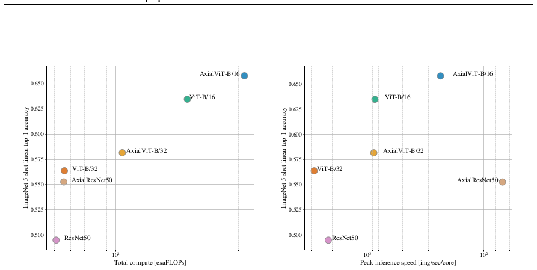
为理解 ViT 如何使用自注意力整合图像信息，我们分析不同层注意力权重跨越的平均距离（图 11）。该“注意力距离”类似于 CNN 感受野大小。低层不同头平均注意力距离高度可变，一些头关注图像大部分区域，另一些关注查询位置附近小区域。随深度增加，所有头注意力距离增加。网络后半部分，大多数头广泛关注词元。
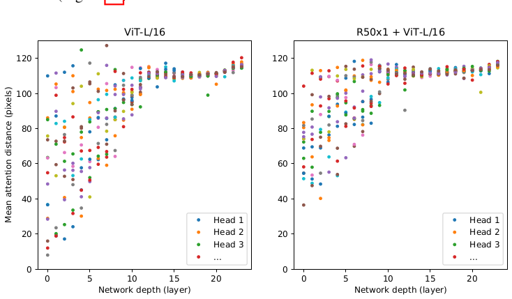
为计算从输出词元到输入空间的注意力图（图 6 和图 14），使用 Attention Rollout（Abnar & Zuidema, 2020）。简言之，对 ViT-L/16 所有头的注意力权重取平均，然后递归相乘所有层权重矩阵。这考虑了所有层中词元间注意力混合。
按照 Kolesnikov et al. (2020) 评估设置，在 ObjectNet 基准上评估旗舰 ViT-H/14 模型，得到 \(82.1\%\) top-5 准确率和 \(61.7\%\) top-1 准确率。
表 9 显示每个 VTAB-1k 任务得分。
| 模型 | Caltech101 | CIFAR-10 | DTD | Flowers102 | Pers. | SVHN | Campus | Beast1k | Resisc45 | Reinforcement | CIFAR-100 | CIFAR-50 | DIML | LSD | LSDS | LKITTI-50 | NORD-Azim | NORD-Elev | Mean | |
|---|---|---|---|---|---|---|---|---|---|---|---|---|---|---|---|---|---|---|---|---|
| ViT-H/14 (JFT) | 95.3 | 85.5 | 75.2 | 99.7 | 97.2 | 65.0 | 88.9 | 83.3 | 96.7 | 91.4 | 76.6 | 91.7 | 63.8 | 53.1 | 79.4 | 63.3 | 84.5 | 33.2 | 51.2 | 77.6 |
| ViT-L/16 (JFT) | 95.4 | 81.9 | 74.3 | 99.7 | 96.7 | 63.5 | 87.4 | 83.6 | 96.5 | 89.7 | 77.1 | 86.4 | 63.1 | 49.7 | 74.5 | 60.5 | 82.2 | 36.2 | 51.1 | 76.3 |
| ViT-L/16 (121k) | 90.8 | 84.1 | 74.1 | 99.3 | 92.7 | 61.0 | 80.9 | 82.5 | 95.6 | 85.2 | 75.3 | 70.3 | 56.1 | 41.9 | 74.7 | 64.9 | 79.9 | 30.5 | 41.7 | 72.7 |
说明：本文档为所提供 PDF 内容的中文翻译版；参考文献保留英文原样。原文图已按英文本裁切嵌入。原文部分表格 OCR 存在列错位或数据缺失，已按可读内容整理并注明；表 2、表 7 因 OCR 数据复杂，保留关键结论并以说明形式呈现。公式编号按原文保留。